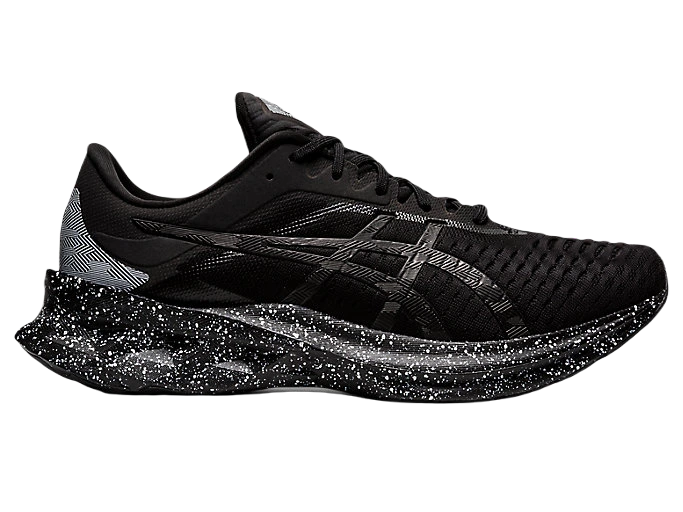
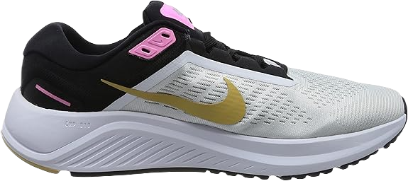
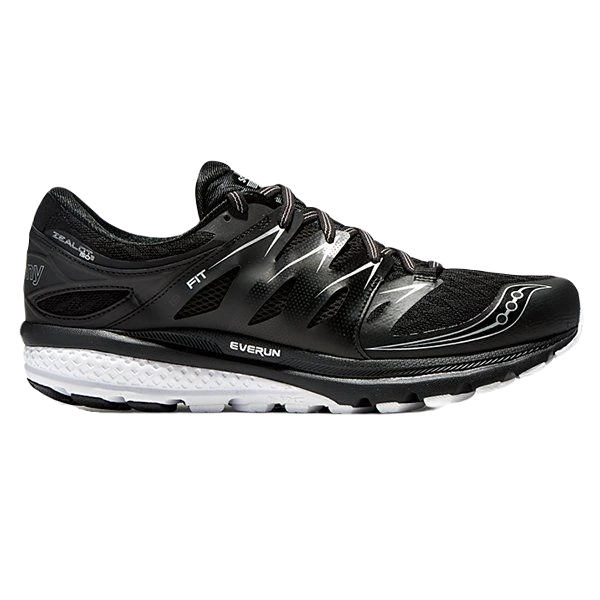
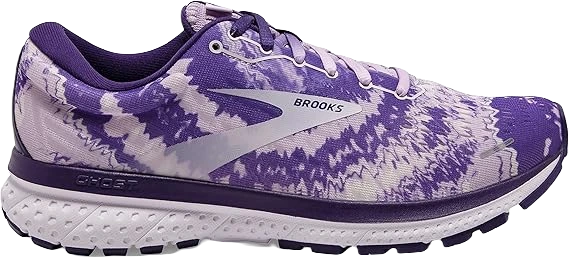
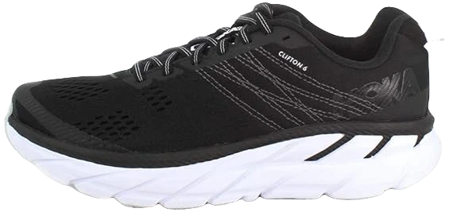
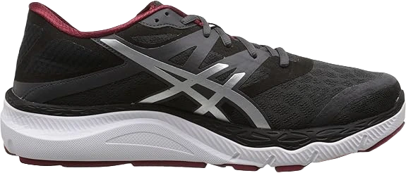
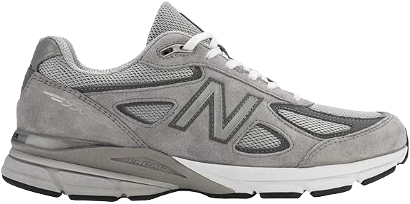

10 Best Running Shoes For Ball of Foot Pain/Metatarsalgia
If you are in to sports and a regular player of tennis, than you must aware of the fact that how important it is to wear most comfortable tennis shoes while playing.Tennis is a game shoes play imported role which is all about control and performance. Although you can wear simple good quality sneakers in the tennis court but if you want to stand out and attain an edge in the game you play, than comfortable mens tennis shoes are a must for you.
Selecting the best pair of shoes for your favorite sports is not a walk in the garden, you need to get the reviews of different brands available in the market and also physically check out the main features of the shoes. The most important thing is comfort that you shall look for. If it is not, what is the most comfortable tennis shoe no matter how re known the brand is, immediately drop the idea of buying it.
-
#1
ASICS Women’s Gel-Venture 6 Running Shoes

At the top of our list is this standout pair of tennis shoes, specifically designed for aggressive players and ideal for professionals. With its advanced features, it offers exceptional performance for those who play at a high level.
Weighing only 11.5 ounces, these shoes are incredibly lightweight, enhancing speed and agility on the court. The compressor heel system provides added support and cushioning, while the durable outsole is made from high-quality rubber, ensuring long-lasting performance. The upper is crafted from MatrYX, known for its strength and flexibility, while the insole features Ortholite memory foam for unbeatable comfort. -
#2
Asics Novablast Men’s Shoe
This shoe features Adiprene cushioning in both the forefoot and heel, which helps absorb shock during forceful landings, providing extra comfort and protection. The durable Adiwear outsole is designed to perform well on all types of surfaces, making it versatile for different playing conditions. For added midfoot support, the shoe is equipped with a 3D Torsion System, enhancing stability during intense gameplay.
The forefoot is reinforced with abrasion-resistant ADITUFF, offering protection when dragging your feet on the court, while the Barricade mesh upper allows for maximum breathability, keeping your feet cool and comfortable. The only potential downside is that the shoe runs narrow, which might not be suitable for players with wider feet. Despite this, it remains an excellent choice for performance and comfort. -
#3
Brooks Transcend 7

This pair of tennis shoes is ideal for advanced players and professionals, offering smooth performance across the court. Let's take a look at some of the standout features:
The shoes come in vibrant colors, aligning with the latest fashion trends, making them a stylish choice on and off the court. Weighing just 13 ounces, they are lightweight and suitable even for beginners starting out in the sport. With a 6 mm drop, these shoes are designed to enhance speed, making them perfect for fast-paced play.
However, one drawback is the lack of toe protection, which increases the risk of injury. Additionally, when wet, these shoes take a longer time to dry, which could be inconvenient during extended play in damp conditions. Despite these minor flaws, they remain a great choice for performance and style. -
#4
Nike Zoom Pegasus Turbo V2
These shoes offer exceptional comfort, thanks to the ample cushioning that supports the feet. Lightweight in construction, they are easy to move in, enhancing agility on the court. The upper is crafted with FLEXION FIT technology, which provides stability around the foot, ensuring a snug and secure fit.
For added comfort, the shoes feature a personal heel fit collar that maximizes support by locking in the heel. The outsole is made from high-abrasion rubber, designed to deliver excellent movement and traction during play. Additionally, the shoes come equipped with a PGUARD protector to shield the toe and assist with dragging the feet without wear and tear. -
#5
Saucony Freedom 3

As we all know, Nike is a top brand for athletes, consistently delivering high-quality products, including options for casual wearers who want both comfort and style.
The Nike Court Lite features a full-length Phylon midsole, designed to provide excellent support for your feet. This Phylon midsole technology is unique to Nike and involves compressing EVA foam through heat during manufacturing, enhancing both comfort and durability.
The shoe also includes a mesh tongue, allowing for breathability and keeping your feet cool. Made entirely from synthetic materials, this pair offers superior durability compared to many other brands on the market. -
#6
Saucony Men’s Zealot ISO
The outsole is made of durable rubber, providing longevity and helping to keep your feet warm during colder weather. The upper is crafted from synthetic materials, offering flexibility and allowing for free movement on the court.
However, these shoes are less suitable for summer, as they have limited airflow, which can cause discomfort during warm weather. Additionally, they tend to run narrow, which may not be ideal for all foot types. Despite these drawbacks, they remain a solid choice for cooler conditions and those seeking affordability. -
#7
Brooks Ghost 11
This shoe is specifically designed for professional athletes, meeting all the essential requirements that tennis players seek in court shoes. The manufacturers proudly claim, "We don’t make our shoes to fit an image, we make them fit," and it holds true, as this pair prioritizes stability and support.
The shoe is equipped with ABZORB cushioning, designed to protect the feet during jumps and landings. These rubber cushions are strategically placed at both the front and back of the shoe for maximum shock absorption. The midsole is constructed from EVA-CAP molded compression, offering additional support and comfort.
It also features ROLLBAR technology, a posting system located in the outsole near the heel, which helps reduce pressure during movement. The durable NDURANCE rubber outsole ensures excellent wear time, making it a reliable choice for long-term use. -
#8
HOKA ONE ONE Men’s Bondi 5
This tennis shoe is designed to offer maximum comfort, making it an excellent choice for players. Here are the standout features:
It comes with an Ortholite insole that provides superior cushioning under the foot and arch, making it ideal even for those with wider feet. The shoe’s low-to-the-ground design enhances comfort and protection, allowing for better stability during play.
A TPU cage wraps around the foot, offering additional stability and support. However, one downside is that this well-cushioned tennis shoe lacks sufficient traction. Additionally, it may cause some rubbing around the ankles, potentially leading to minor discomfort or irritation during play.
Despite these minor issues, the shoe excels in providing cushioning and support, making it a solid choice for players prioritizing comfort. -
#9
ASICS Men’s/Women’s 33-M-M
It features gender-specific Gel cushioning in both the forefoot and rearfoot, designed to absorb shock and reduce the impact of forceful landings. The midsole is made from SOLYTE, which is lighter than both EVA and SpEVA materials, yet still provides excellent support.
The upper part of the shoe is constructed with FLEXION FIT technology, offering full-foot support for enhanced performance. Additionally, the heel is lined with two layers of memory foam, increasing both stability and grip on the court.
However, one drawback is the narrow and small toe box, which may cause discomfort for some wearers. Additionally, the shoe lacks sufficient breathability, making it less suitable for extended play sessions in hot conditions. Despite these issues, it remains a durable and supportive option for shorter periods of play. -
#10
New Balance 990v4
This vibrant tennis shoe is ideal for court use, offering a lightweight design and maximum stability for players.
The shoe features a seamless upper that enhances comfort and fits snugly around the ankle, improving stability during movement on the court. Additionally, a TPU cage enhances airflow to the feet while providing flexibility and a secure fit. The sock liner is equipped with die-cut EVA foam, delivering excellent cushioning and support, and the herringbone pattern traction ensures reliable grip.
However, this shoe is not built for long-term durability, which may be a major drawback for some. It is also less suitable for those with narrow feet, making it better suited for players with wider feet. Despite these issues, it remains a solid choice for those seeking comfort and stability during play.